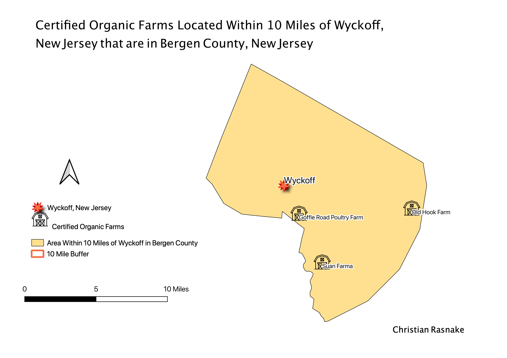
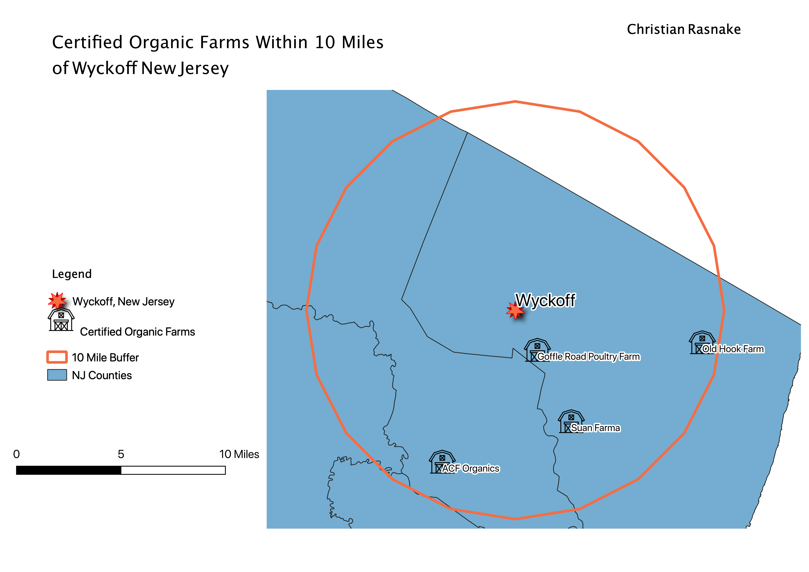
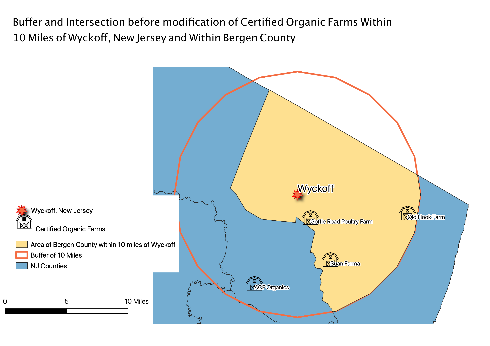

Homework 10: Analysis of Certified Organic Farms Within Bergen County and 10 Miles of Wyckoff, New Jersey
Christian Rasnake
This map aims to answer the question "How many Certified Organic Farms are there in a 10 mile radius from my hometown Wyckoff, New Jersey that are also within Bergen County"? I used the geoprocessing tools buffer and intersection. I used the buffer tool to find the 10 mile radius around Wyckoff, New Jersey. Then, once I had the buffer in place, I was able to intersect the buffer layer with the selected feature of Bergen County in the county layer in order to find which farms were located within Bergen County and 10 miles or less from Wyckoff, New Jersey.

This final map shows the Certified Organic Farms in the area within Bergen County that is 10 miles from Wyckoff.
Step 1: Map of 10 Mile Buffer

The map above shows my first step of creating a 10 mile buffer from the point Wyckoff, New Jersey.
Step 2: Map of Buffer and Intersection

Here, you can see the overlay of both the buffer and the intersection. The highlighted yellow area is the area of focus for the map to answer my aforementioned question.
Final Map
Here is the final map, focused on the interest area that answers my question. There were only three Certified Organic Farms within the area of interest after geoprocessing. It is extremely hard for farms to become certified organic, and takes a lot of money to gain the certification. I was surprised that there were 3 certified organic farms this close to my hometown. I have been to the Goffle Road Farm before, and am looking forward to visiting the other two the next time I am home!
Data used for this project
Source of NJ Organic Farm Data
CSV of NJ Organic Farm Data
Source of NJ Shapefile